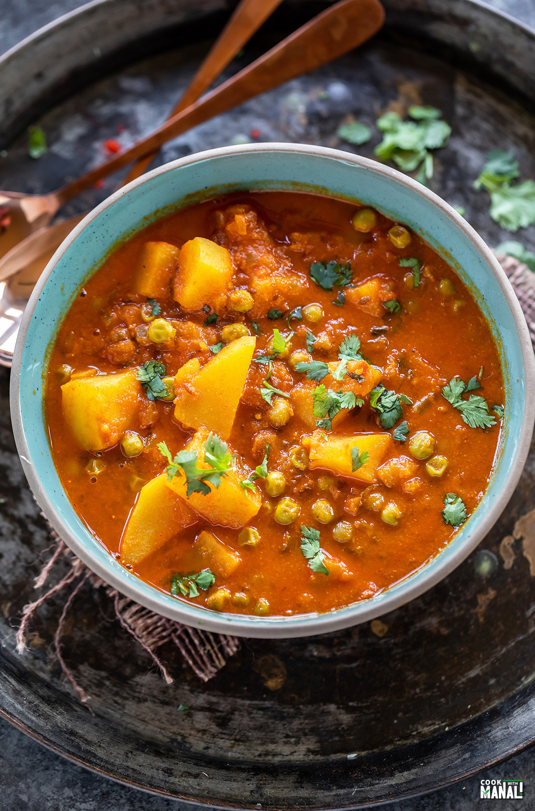

Aloo Matar

Aloo Matar is my favorite dish. This reciepe is from Cooking With Manali
Ingredients
- Potatoes: for this aloo matar recipe, I use either Russet potatoes or gold potatoes.
- Green peas: this curry tastes best when made with fresh green peas. However if you live in a place like I do where it’s hard to find fresh sweet peas, then frozen peas work just fine. That is what I have used in this recipe.
- Onion & Tomatoes: most basic Indian curries have a base made of onions and tomatoes and this one is no exception. I like pureeing the tomatoes in a blender for this recipe.
- Spices: cumin seeds, hing (asafoetida), coriander powder, turmeric and red chili powder are some of the spices that are used here. Kasuri methi (dried fenugreek leaves) also add a nice aroma when added towards the end.
Step by step instructions
- Cut 3 medium potato (around 350 grams) into cubes, the bigger you cut the cubes, more time it will take for them to cook. Add 1 tablespoon of oil to a pan on medium heat. Once hot, add the cubed potatoes to the pan.
- Cook on medium to low heat for around 5 minutes, until they get that little coating on them. Then remove on a plate. This step is optional, you can skip and add potatoes directly later while cooking the curry but this adds flavor and makes the potatoes tastier.
- To the same pan, now add 3/4 teaspoon cumin seeds. You may need to add additional 1/2 to 1 teaspoon oil at this point. Once cumin seeds crackle, add 1/4 teaspoon hing.
- Then add 1 large or 2 medium chopped onions (180 grams). Cook 5 to 6 minutes until they turn golden brown string often.
- Then add 2 teaspoons ginger-garlic paste and 1 chopped green chili. Cook for 1 minute until the raw ginger garlic smell goes away.
- Add in pureed tomatoes (3 tomatoes, around 350 grams pureed in a blender). You can also add additional 1/2 tablespoon tomato paste at this point.
- Cover and Cook for 5 to 7 minutes until the tomatoes completely cook. This step is important, make sure to cook the tomatoes really well.
- Remove lid once the tomatoes are cooked and add all the spices-
- 2 teaspoon coriander powder
- 1 teaspoon kashmiri red chili powder
- 1/2 teaspoon turmeric
- 1/2 to 3/4 teaspoon salt
Cook a minute until oil starts oozing out of masala.
- Add the potatoes back with 1 cup peas (frozen peas which I added to hot water for 10 mins before using in the recipe).
- Stir well and then add 1 & 1/2 to 2 cups water. Add 1 tablespoon chopped cilantro, cover with a lid and cook 10 to 15 minutes until the potatoes are completely cooked.
- It can take less time (like 10 mins) if potatoes are cut small into like 1/4 to 1/2 inch cubes and can take 15 minutes (or more) if you cut them big.
- Once potatoes are done, finish with 1 teaspoon kasuri methi. You can adjust the consistency of gravy at this point, if it has become too thick, add some water (depends on personal preference). Garnish with more cilantro and serve hot.